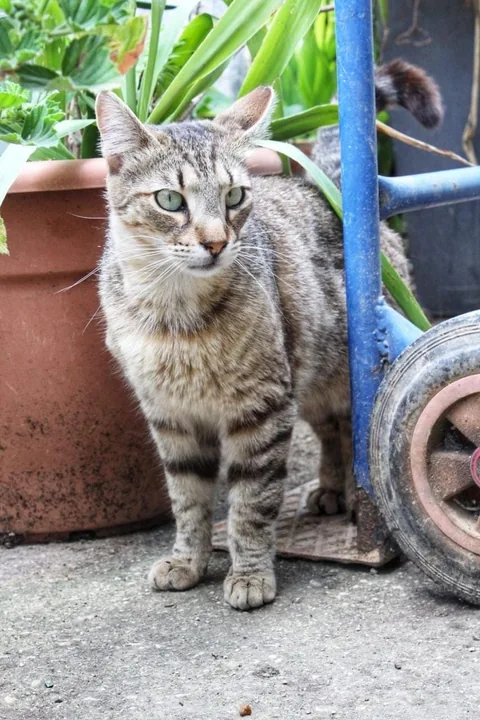
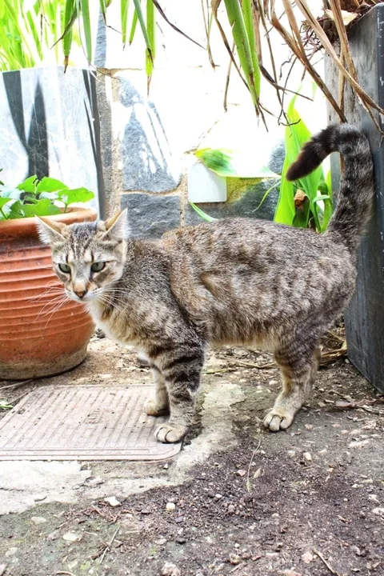

Kater · sucht ein Zuhause
Findus
Ruhig, sanft und in seiner eigenen Art sehr zugewandt.
männlich · EKH Tabby · geboren ca. 2022 · kastriert · geimpft · Region Athen, Griechenland
sucht Zuhause
Interesse an FindusFindus auf einen Blick
- Name
- Findus
- Geschlecht
- männlich
- Geboren
- ca. 2022
- Rasse
- EKH Tabby, Mischling
- Grösse
- mittel
- Aufenthaltsregion
- Region Athen, Griechenland
- Kastriert
- ja
- Geimpft
- ja
- FIV-/FeLV-Test
- vor der Ausreise vorgesehen
- Verhalten mit Katzen
- nach Beobachtung friedlich, lebt lieber ruhig für sich
- Erfahrung mit Hunden
- vorhanden (kleine Hunde)
- Vermittlung über
- Murka-Katzenhilfe e. V.
Sein Wesen
So ist Findus
Was wir hier beschreiben, beruht auf den Beobachtungen aus seinem Alltag – nicht auf Zusicherungen.
Ruhig und beobachtend
Findus ist kein Kater, der laut Aufmerksamkeit einfordert. Er beobachtet lieber – ruhig, aufmerksam, in seinem eigenen Rhythmus.
Nähe auf seine Art
Wenn man sich ihm nähert und er Vertrauen gefasst hat, geniesst er Körperkontakt sichtlich. Seine Zuneigung ist leise – aber deutlich.
Friedlich mit Artgenossen
Findus lebt nach Beobachtung friedlich neben anderen Katzen. Er sucht deren Gesellschaft nicht aktiv, vermeidet aber auch jeden Streit.
Erfahrung mit kleinen Hunden
Mit kleinen Hunden ist Findus nach bisheriger Beobachtung umgänglich und ruhig geblieben. Die endgültige Einschätzung erfolgt individuell.
Eigenes Tempo beim Fressen
Findus frisst lieber in Ruhe und ohne Gedränge. Wer ihm dafür etwas Platz lässt, kommt seinem Wesen entgegen.
Rückzug gehört dazu
Findus braucht eigene Rückzugsorte, an denen er ungestört ist. Das ist kein Zeichen von Scheu – sondern von Charakter.

Seine Geschichte
Gefunden, aufgenommen, angekommen
Findus wurde alleine gefunden und aufgenommen. Von Anfang an war er kein Kater, der sich lautstark in den Vordergrund drängte.
Er lebte sich ein, ruhig und in seinem eigenen Tempo. Er akzeptierte die anderen Katzen in seiner Umgebung, suchte aber seinen eigenen Platz.
Was Findus heute ist, hat er sich selbst erarbeitet: ein ruhiger, freundlicher Kater, der weiss, was ihm guttut – und das auch zeigt, wenn man ihn lässt.
Was zu ihm passt
Findus' ideales Zuhause
Keine Liste von Anforderungen – eher eine Beschreibung, worin Findus nach unseren Beobachtungen aufblüht.
Ruhige Atmosphäre
Ein Zuhause ohne Dauerhektik, in dem sein ruhiges Wesen Raum hat – und in dem man ihn nicht zu Kontakt drängt, den er gerade nicht möchte.
Eigene Rückzugsorte
Plätze, die nur ihm gehören und an denen er ungestört bleibt, wenn er das braucht.
Gesicherter Balkon willkommen
Ein Balkon oder eine Terrasse wären schön – katzensicher gestaltet, damit er frische Luft und Aussenreize geniessen kann.
Andere Katzen möglich
Ein Zusammenleben mit anderen Katzen ist nach Beobachtung denkbar, wenn das Tempo stimmt. Die konkrete Einschätzung erfolgt im Vermittlungsprozess.
Kleine Hunde möglich
Findus hat mit kleinen Hunden bisher ruhig reagiert. Ob ein gemeinsamer Haushalt passt, wird individuell geprüft.
Wohnungshaltung oder gesicherter Freigang
Die Haltungsform wird gemeinsam mit Murka-Katzenhilfe e. V. entschieden – passend zu Findus und zur konkreten Wohnsituation.
Medizinischer Stand
Gesundheit und medizinischer Verlauf
Was gesichert ist
- Findus ist kastriert.
- Findus ist geimpft.
Was noch aussteht
- Ein FIV- und FeLV-Test wird vor der Ausreise durchgeführt.
- Die abschliessende medizinische Prüfung erfolgt im Rahmen des Vermittlungsprozesses.
Alle Angaben geben den Stand wieder, der uns zum Zeitpunkt der letzten Aktualisierung bekannt war.
Bilder
Findus in Bildern
Aufnahmen aus seinem Alltag. Zum Vergrössern anklicken oder mit Enter öffnen.
Verantwortlich für die Vermittlung
Murka-Katzenhilfe e. V.
Die Margo Animal Care Initiative stellt Findus und seine Geschichte vor. Bewerbung, Prüfung und Vermittlung erfolgen über Murka-Katzenhilfe e. V.
Vermittelt wird in liebevolle Wohnungshaltung oder in ein Zuhause mit gesichertem Freigang. In entsprechend geeigneter und sicherer Umgebung kann auch Freigang ermöglicht werden.
Alle Fragen zu Ablauf, Schutzgebühr, Vorkontrolle und Übergabe beantwortet der Verein.
Vereinsangaben
Murka-Katzenhilfe e. V.Karl-Friedrich-Straße 35
44795 Bochum
Registergericht: Amtsgericht Bochum
Registernummer: VR 4939
Könnte Findus zu deinem Leben passen?
Wenn du dir vorstellen kannst, Findus ein ruhiges Zuhause zu geben, führt der nächste Schritt zu Murka-Katzenhilfe e. V. Dort wird gemeinsam geprüft, ob es für euch beide passt.
Bewerbungsformular öffnen (öffnet in neuem Tab) Vermittlungsverfahren ansehen (öffnet in neuem Tab) Zurück zu allen Katzen
Letzte Aktualisierung des Profils: 17. Juli 2026